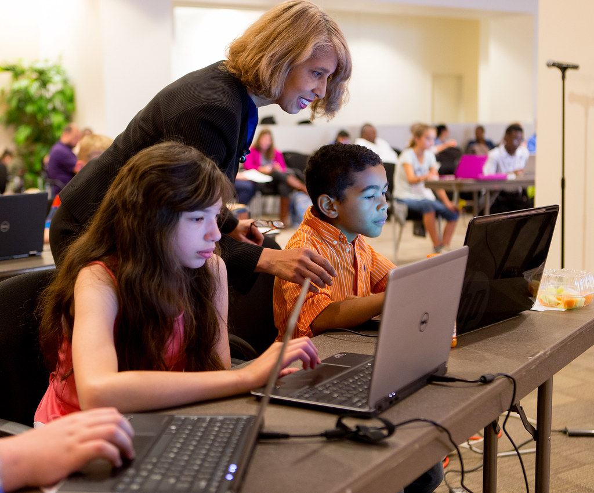

Preden se uporabi igro, podprto z digitalno tehnologijo pri pouku,
je potrebno preveriti naslednje stvari:

Računalniška igra © 2023 by Jerneja Kropar is licensed under CC BY-NC 4.0
- Če je igra primerna za učence in če ustreza učni snovi.
- Na katerih napravah se jo lahko igra?
- Uporabniški vmesnik mora biti jasen in enostaven za uporabo.
- Da igra sproti shranjuje ravni, ki jih opravi učenec.
- Ali se da igro prilagoditi glede na učenca(težavnost).
- Da ustreza starostni skupini učencev.
- Da je igra v ustreznem jeziku.
- Čas za reševanje nalog – da bodo imeli učenci dovolj časa za dokončanje igre.
- Da je igra prilagojena učencem z učnimi težavami in da so zaščitene pred ustrahovanjem.
Pedagoški vidiki igre
- Izobraževalna vsebina - Vsebina mora ponazoriti poučevano snov. Tudi če vsebina ni povezana z učnim načrtom, bi morala jasno in poenostavljeno prestaviti koncepte, ki se jih učijo.
- Jasni cilji: potrebno je zagotoviti da so cilji igre jasni in da učenci natančno vedo, kaj morajo storiti. V nasprotnem primeru bi obtičali in ne bi vedeli, kako naprej.
- Jasno napredovanje: učitelj mora preveriti, če se učencu prikazuje njegovo napredovanje. To bo učencem pomagalo, da bodo imeli pozitiven odnos do njihove uspešnosti in da se jim pokaže, da njihova dejanja vplivajo na njihovo napredovanje. S tem otroci prevzamejo odgovornost za svoje učenje.
- Povratne informacije ne smejo biti podane na grob način – vodenje oz. podajanje namigov ohranja osredotočenost učencev.
- Da se lahko igra, podprta z digitalno tehnologijo po možnosti igra v skupinah.
- Da programska oprema omogoča spremljanje napredka učencev – učitelj lahko analizira, kaj dela učencem težave in kateri snovi je potrebno posvetiti več časa.
- Da igre vsebujejo tudi razdelek Pomoč, ki bo pomagal učencem, ko bodo obtičali.
Po ustrezni izbiri je potrebno igro prilagoditi učni uri oz. pedagoškim ciljem. Pri tem je treba paziti na naslednje:
- Odvisno od vrste igre in učnih ciljev je dobro ustvariti skupine, v katerih bodo učenci lahko sodelovali.
- Naj imajo otroci 5 minutni odmor na vsakih 45 min.
- Pred začetkom ure naj učitelj določi učne cilje in presodi, kateri del igre ali ravni bi najbolj podpiral učno snov.
- Med uro naj učitelj predstavi igro in razloži, kako se upravlja z njo.

Computer Science for All-19-5, Author: US Department of Education, CC BY 2.0, Source: Flickr
Po končani uri je dobro imeti razpravo z učenci o tem, kaj so se naučili, kaj jim je delalo težave in katere vse možne rešitve so uporabili. S tem si bodo zapomnili glavne koncepte in ideje igre. Poleg tega je treba preveriti splošno razumevanje igre – kaj je od njih zahtevala, s katerimi izzivi oz. vprašanji so se soočili, kaj so morali narediti, da so opravili nalogo in na katero temo se nanaša igra. Navsezadnje pa morajo učenci tudi razumeti, kako se koncepti v igri odražajo v resničnem življenju (Patrick, 2009).
Primer igre, podprte z digitalno tehnologijo si lahko pogledate na povezavi